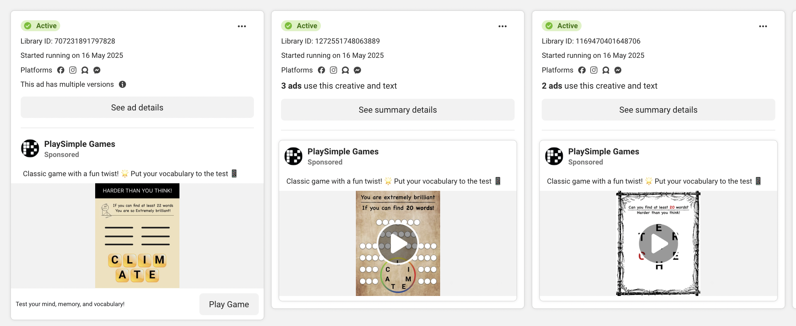
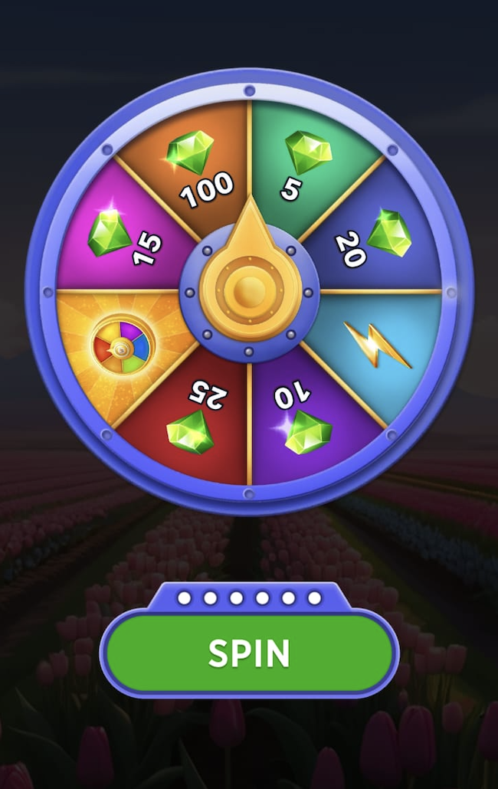
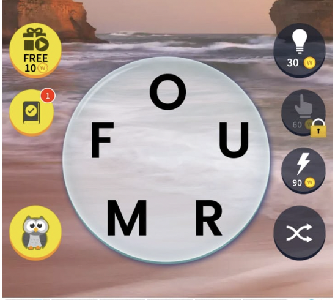
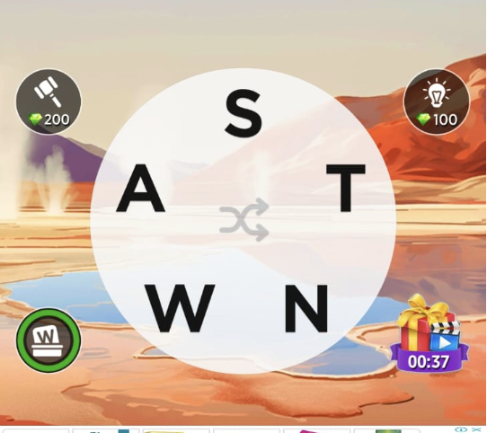

Crossword Jam by PlaySimple Games is a leading word puzzle game, facing strong competition from prominent titles such as Wordscapes (PeopleFun) and Words of Wonders (WoW) (Fugo Games). Our objective over the next 12 months is to grow revenue and market share by strategically leveraging User Acquisition, Retention, and Monetization, guided by competitor analysis and data-driven insights.
Why Crossword Jam?
Market Leadership Potential: Operating in the most popular mobile game genre with high Total Addressable Market (TAM)
Strong Foundation: Top-charting product by PlaySimple Games with proven growth through localization
Growth Opportunity: Significant scope to increase market share against competitors like Wordscapes and Word of Wonders
Current Market Position
Key User Demographics
80% female user base - predominantly casual players
Long-Term (7-12 months): Strategic investments for sustainable growth
Expand each section to see details
Acquisition Strategy
💡
Key Pain Points & Opportunities
Lack of Playable Ads: Competitors use playable ads for up to 20x higher conversions. Crossword Jam mainly uses static/video ads.
Cross-Promotion Underutilized: Minimal cross-app promotion, even among PSG's own games.
Localization Scope: Supports 28 languages vs. WoW's 35.
ASO & Store Presence: App visuals and preview video lack vibrancy expected in games.
Referral Channels: Weak push for referrals despite proven success in mobile gaming.
Success Metrics (KPIs)
Primary: Return on Ad Spend (ROAS)
Secondary: Day-7 (D7) and Day-30 (D30) retention
Quick Wins (0–3 Months)
App Store Optimization (ASO) Enhancement
Pain Point: Low app rating and a plain white preview video that gives an academic feel rather than game-like feel.
Actions: Upgrade store visuals to highlight vibrant gameplay, optimize top user reviews emphasizing key benefits such as brain training, vocabulary building and enjoyable gameplay.
Playable Ads Implementation both for Acquisition & Cross Platform Promotion
Status Quo - If we are using Playable Ads already, understand how the conversion metric are compared to other ads across channels, geographies & creatives to decide if & where to start
Pain Point: Wordscapes effectively use interactive playable ads that offer much better experience and upto 20X higher conversion. These ads also attract higher-quality, high-intent users. Crossword Jam lacks such ads — most observed were static banner or videos ads on Facebook.
Deploy across in-app cross-promotion slots, Facebook and other relevant channels.
User Interactive Playable ads of other titles like Word Search, Word trip within Crossword Jam to boost growth. Right now I see minimal cross promotion
Priority: ✅ Extremely High
Mid-Term (4–6 Months)
Market Expansion Through Localization
Actions: Analyse & Improve current onboarding & retention funnels across key languages. Accelerate growth in high-potential and emerging markets through deeper localization.
Expand app language support beyond the current 28 to unlock new regions. WoW has 35 languages. Gen AI can really boost localisation quality & speed
Priority: ✅ High
Optimize Ad Frequency and Timing to Improve Onboarding
Pain Point: Interstitial ads are shown too early in the user journey. Wordscapes delays ad initiation, potentially leading to better retention. Early ads may be causing drop-offs and negatively impacting D7/D30 metrics.
Actions:
Enhance the ML model to intelligently determine the optimal timing and frequency for ad delivery, balancing monetization with user experience.
Benchmark with Wordscapes and similar top-performing games to refine ad logic and boost LTV.
Priority: ✅ High
Long-Term (7–12 Months)
Enhanced Referral Program
Opportunity: 45% of female users discover games via referrals or word-of-mouth, an underutilized channel for Crossword Jam.
Actions:
Make In-App Referrals really prominent & awards really appealing
Introduce "challenge a friend" features to make referrals more interactive and incentivized.
Priority: ⚪ Medium
Retention Strategy (Engagement & Player Retention)
💡
Key Pain Points & Opportunities
Ad Placement Issues: Early interstitials hurt retention. Competitors delay these ads.
Gameplay Bugs: Issues like invalid word recognition and app freezes impact trust.
LiveOps Underdeveloped: Lacks time-limited events and dynamic content drops.
Repetitive Gameplay: Power users report lack of content variety at higher levels.
Key Performance Indicators
New Users:
D1 Retention: >35%
D7 Retention: 30%
D30 Retention: 20–25%
Avg. Session Length
Power Users:
M3, M6, M12 Retention
Avg. Session Length
Quick Wins (0–3 Months)
Ad Frequency Optimization
Pain Point: Early interstitials are causing friction. Wordscapes delays interstitials to protect early user experience.
Actions:
Limit early sessions to rewarded videos and non-intrusive banners.
Train ML models to personalize ad initiation, frequency and format per user, geography, and behavior to maximise LTV
Priority: ✅ High
Bug Resolution & Gameplay Fixes
Pain Point: Frequent complaints around invalid word recognition and app crashes.
Actions:
Create a fast-track QA and bug resolution pipeline prioritizing retention-impacting bugs.
Monitor app reviews and crash analytics daily for top issues.
Priority: ✅ High
Daily Streak Rewards
Opportunity: Build Day 1–7 retention through habit-forming reward loops.
Actions:
Surface streak rewards prominently on the home screen.
Opportunity: Wordscape boosted its LTV by 40% using liveops & continuously improving on it. It's significant money maker for them. Word of wonder also uses it pretty nicely, the UX is also good!
Use calendar-based LiveOps planning to align with real-world moments (festivals, exams, holidays).
Priority: ✅ High
AI-Based Adaptive Long term Puzzle Progression
Objective: Common complain is that the apps becomes boring after a point
Actions:
Quick Implementation by giving Manual Option (1-3Month) - We can give a manual control to users to adjust difficulty & see if the engagement & LTV improves for those users. The learnings from this can be fed to improve content progression for all users using AI/ML
Long Term - Use AI to adapt puzzle difficulty, themes, and content pacing personalised for each user
Ad Fatigue: Overexposure to interstitials degrades user experience and retention.
Micro-Ad Bundles: No affordable short-term ad-free options for new users.
Rewarded Video Experience: Could be surfaced better and more frequently.

Example: Casino-style spin wheel for rewarded ads can boost engagement.
Event-Based Monetization: Underutilized compared to competitors.
Personalization: No user-segmented pricing or dynamic discounts.
Key Performance Indicators
Primary:
ARPDAU (Average Revenue Per Daily Active User)
Conversion Rate: Free → Paid (overall and by user segment)
Average Revenue Per Paying User (ARPPU)
eCPM per ad format (Interstitial, Rewarded, Banner)
Quick Wins (0–3 Months)
Ad Frequency & Format Optimization
Pain Point: Interstitials shown too frequently may frustrate users and reduce retention.
Actions:
Audit and optimize interstitial ad frequency to maximise LTV. Shown too much too early can impact retention.
Priority: ✅ High
Rewarded Ad Experience Upgrade
Pain Point: Rewarded ads are functional, appeal can be improved significantly.
Actions:
Improve the visual presentation of rewarded ads with gift-like animations and surprise elements. PSF Rewarded Video Icon is not appeaing enough, the gift icon feels much more appealing 
Add a casino style games like spin wheel where players always win something — encourages more rewarded ad views and perceived control. I watched 2-3 rewarded video ads just to try my luck & see how many coins I can win. You can offer mediums sized reward in first spin, which will hook users but now they would want to spin again in anticipation of winning an even larger reward, but they need to watch a video for that, but now they are in flow they dont mind watching because the hope is to win large even though they might not
Priority: ✅ High
Priority: ✅ High
Launch Entry-Level Ad-Free Bundles
Pain Point: Rs 990 one-time ad-free pack may deter new users. Looks steep. Wordscape has Rs 250 Ad free bundle for 7 days
Actions:
Introduce affordable short-term ad-free options (e.g., Rs 50 for 1-day, Rs 200 for 7-day).
Use these as entry points to convert users into long-term buyers.
Priority: ✅ High
Priority: ✅ High
Mid-Term (4–6 Months)
Dynamic Offers & Personalized Pricing
Opportunity: Segmenting offers based on user behavior can significantly improve conversion and LTV.
Actions:
Offer discounts or time-limited bundles to new but engaged users.
Introduce a dynamic offer system that adjusts pricing based on signals like time spent, puzzles solved, or previous purchase intent.
Priority: ⚪ Medium
Event-Based Monetization & Time Limited Offers
Opportunity: Competitors successfully use FOMO and premium tiers to monetize time-limited events.

{kind=link}
{kind=link}
{kind=link}
{kind=link}
.jpeg){kind=link}
{kind=link}
{kind=link}
{kind=link}
{kind=link}